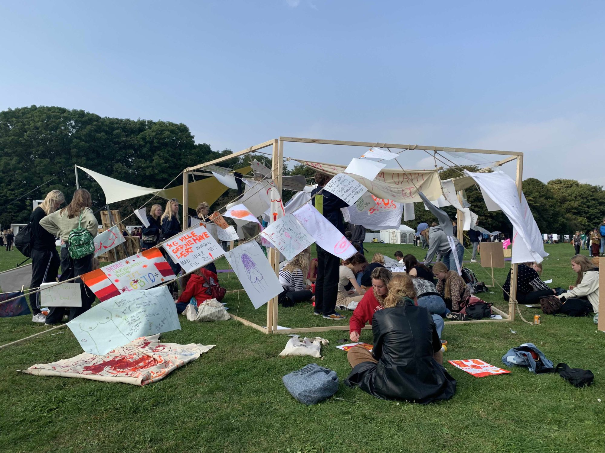
8.9.21
Ungdommens Folkemøde
Til Ungdommens Folkemøde i Valbyparken byggede Kunstdemokraterne en installation som skulle sætte fokus på bedre seksualundervisning. I løbet af de to dage kunne de 15.000 unge gæsterne på folkemødet komme med kunstneriske input til, hvad de synes mangler i seksualundervisningen. ”Hvad ville du gerne have vidst?” ”Hvad mangler du stadig at vide?” ”Hvilket råd vil du gerne give videre?” Alle input samles efterfølgende, bearbejdes og bliver til en udgivelse af Kunstdemokraterne.
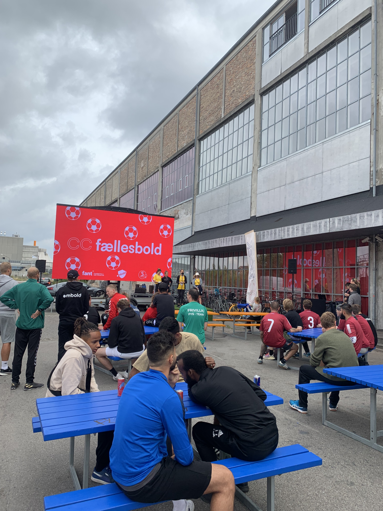
14.8.21
CC Fællesbold
En lørdag i august blev parkeringspladsen foran CC omdannet til en fodboldbane og en stor turnering blev afholdt i samarbejde med NGO’erne FANT, Ombold og Street Society. Der blev spillet fodbold i flere timer og i løbet af dagen kunne man male sin egen sportstrøje, skrive poesi og se dokumentar om Ombold af Kristian Lytken Laursen. Både CC og Torsdagsklubben stillede med hold til turneringen. CCs eget hold fik desværre sidstepladsen i turneringen.
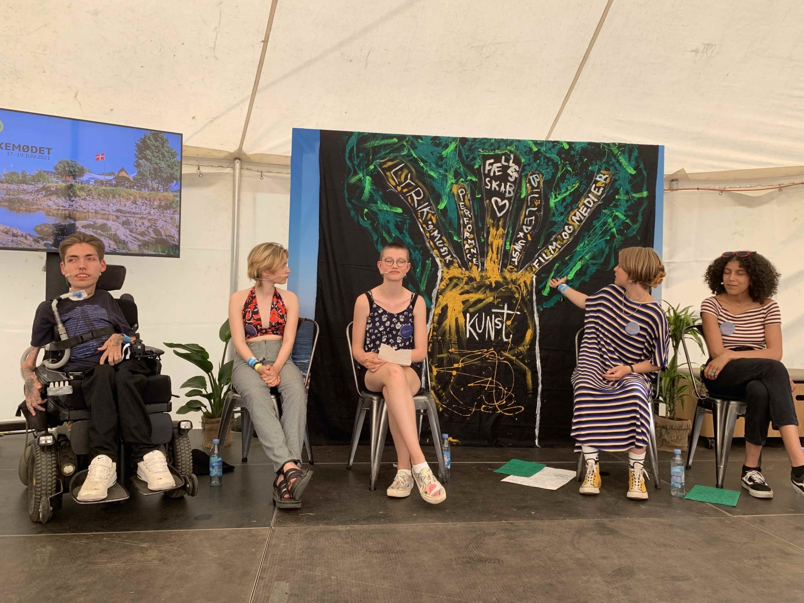
19.7.21
Folkemødet på Bornholm
Som en del af den Sociale Scene tog Kunstdemokraterne og SUMH (sammenslutningen af unge med handicap) afsted til Bornholm for at tale om at være ung og at tilhøre et fællesskab. De var på scenen to gange i løbet af Folkemødet og fik startet en samtale om fællesskab ved at inddrage publikum og høre deres fortællinger om et godt fællesskab de har været en del af. Alle historierne blev en del af Fællesskabstræet som voksede og voksede i løbet af Folkemødet.
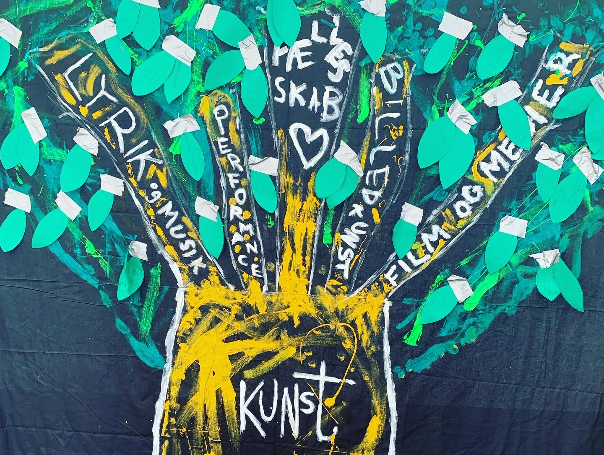
17.7.21
Digitalt Folkemøde
En del af Folkemødet var i år digitalt og en del af programmet på den Sociale Scene blev livestreamet fra CC. Om formiddagen stod Kunstdemokraterne og SUMH (sammenslutningen af unge med handicap) for et kunstnerisk indslag med poesi, performance, billedkunst og et interview med forsker Emil Falster om inkluderende fællesskaber. Som en ramme for både det digitale event og senere på Folkemødet på Bornholm udviklede sig et Fællesskabstræ.
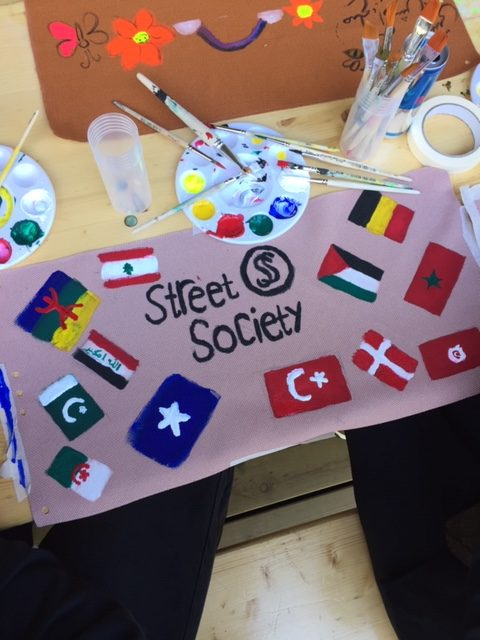
30.5.21
Børn og unge fra Avnstrup til workshop Under Buen
Under Bispeengbuen på Nørrebro holder Street Society til. De er en NGO, der arrangerer gadefodbold og turneringer for børn og unge. Søndag den 30. maj havde de sammen med Together We Push inviteret børn og unge fra Avnstrup Asylcenter til workshop. CC var med til at lave workshoppen om kunst i sporten, fællesskab og politik. Vi lavede bannere og flag med politiske og personlige budskaber som blev hængt op under turneringen. Det hele skal bruges igen til CC Fællesbold, en stor turnering på CC den 14. august
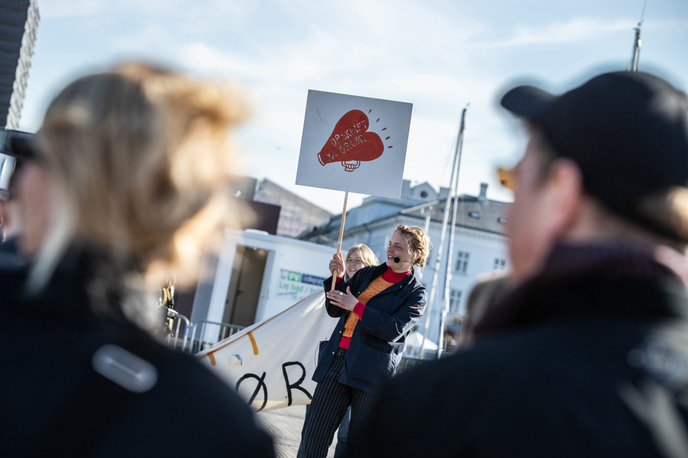
17.5.21
Time To Activate
Kunstdemokraterne indtog Ofeliaplads den 17. maj med deres OPSKRIFT PÅ OPRØR. Som en del af arrangementet ”Time to Activate” afholdt af Roskilde Festival i samarbejde med Det Kongelige Teater havde Kunstdemokraterne udviklet en workshop, hvor de tog deltagerne gennem de tre trin, som opskriften består af: 1. Giv slip 2. Giv liv 3. Slip fri. Det gik ikke stille for sig! Forhåbentlig blev deltagerne inspirererede til at være mere modige og oprørske.
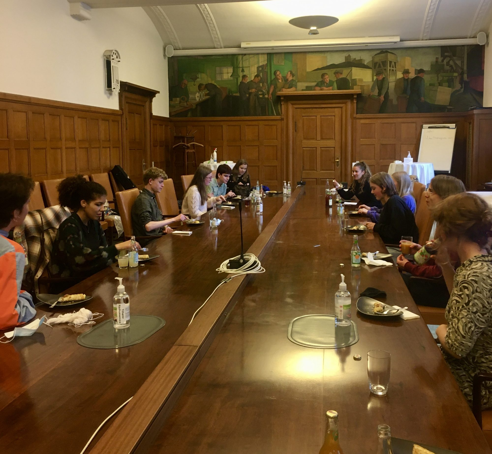
11.5.21
Besøg på Københavns Rådhus
Ungerådet i København inviterede Kunstdemokraterne til møde på Rådhuset for at tale om samarbejde. Der blev udvekslet ideer, diskuteret og fortalt – og spist rådhuspandekager. Mange gode ideer kom på bordet, og lige nu er fokus på at lave interventioner i byrummet, kreativ klimakampagne og arbejde for bedre seksualundervisning, som er ét at Ungerådets fokusområder.
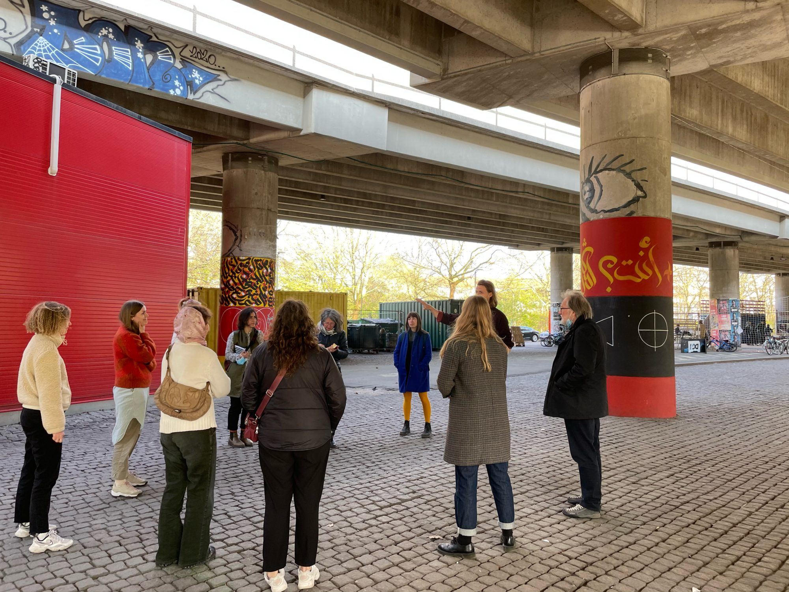
28.4.21
Workshop Under Buen
Kunstdemokraterne og CC var inviteret med til workshop hos Urban 13, der driver en masse spændende projekter Under Buen på Frederiksberg/Nørrebro. Der skal være kunst Under Buen, og Kunstdemokraterne var inviteret med for at give input til, hvordan man kan arrangere kunstudstillinger midt i byen – og gøre det, så det forbliver et sted for alle.
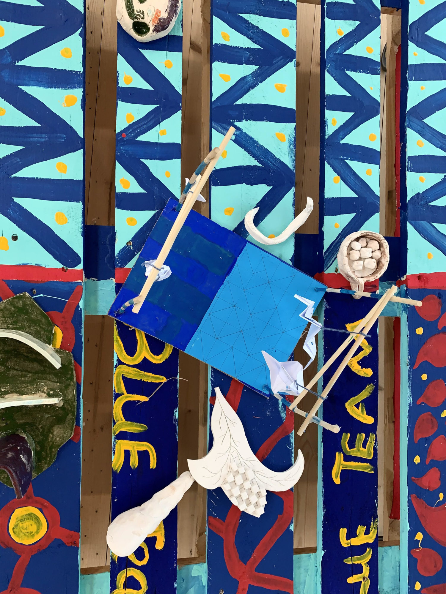
28.4.21
Lær med kunst og fernisering
Minipavilloner fyldt med yndlingsmad, hurtige skibe og minder fra hjemlandet. Projektet Jeg kan skabe sluttede med fernisering på CC den 28. april. Eleverne fra modtageklassen med hjemlande som Uganda, Thailand, m.fl. fortalte – for det meste på dansk – om deres værker, ideer, tanker og udfordringer og om at prøve sig frem og lave om undervejs. Som fx når en konstruktion i leret ikke lige makker ret.
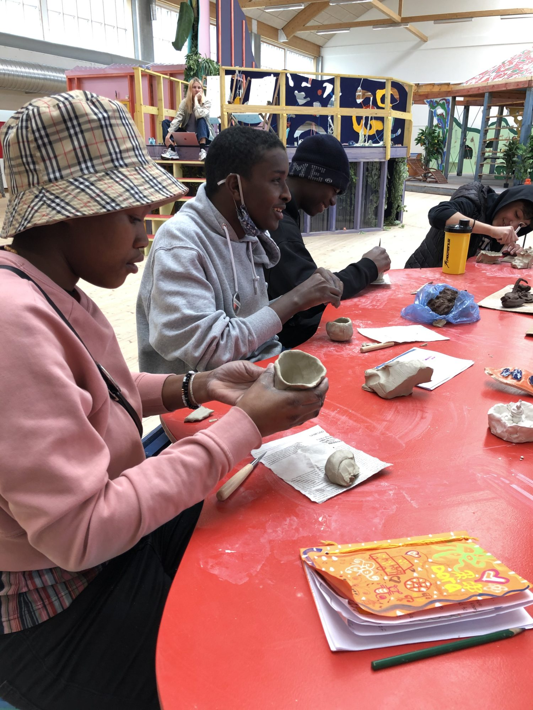
23.4.21
Modtageklasse på CC
Skibe, selvportrætter, madretter og huse i ler. I april måned har eleverne fra modtageklassen 8.M fra Rådmandsgade Skole arbejdet med at skabe små værker i ler på CC, mens de snakkede og lærte hinanden og stedet at kende. Projektet Jeg kan skabe er udviklet af projektleder Kirsten Rotbøll Lassen i samarbejde med CC. Forsker Lars Emmerik Knudsen fra DPU gennemarbejder nu data fra projektet og undersøger, hvad det at arbejde sanseligt med kunst betyder for de unge i modtageklassen.
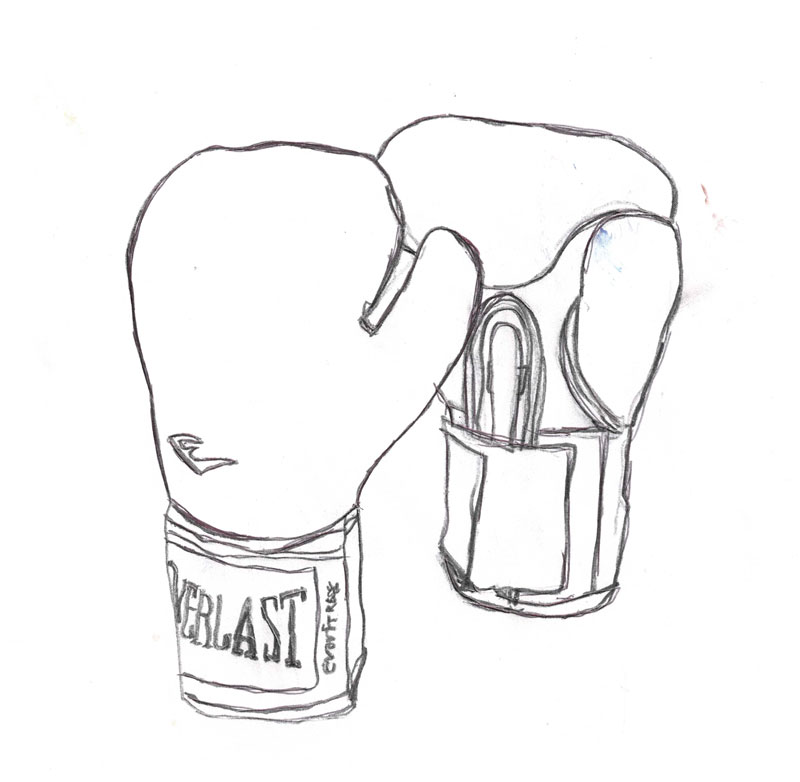
8.4.21
Torsdagsklubben har tegnet
Når du besøger CC kan du tage Sportsbladet i hånden og bruge det som guide til at opleve udstillingerne Art of Sport og Short Story. Bladet rummer spørgsmål og opgaver til kunstværker, spændende artikler og meget mere. Til at lave Sportsbladet har vi fået særlig hjælp af vores venner; Torsdagsklubben, og mange af de tegninger, du finder i bladet, er tegnet af dem. Læs med når CC snart åbner igen!
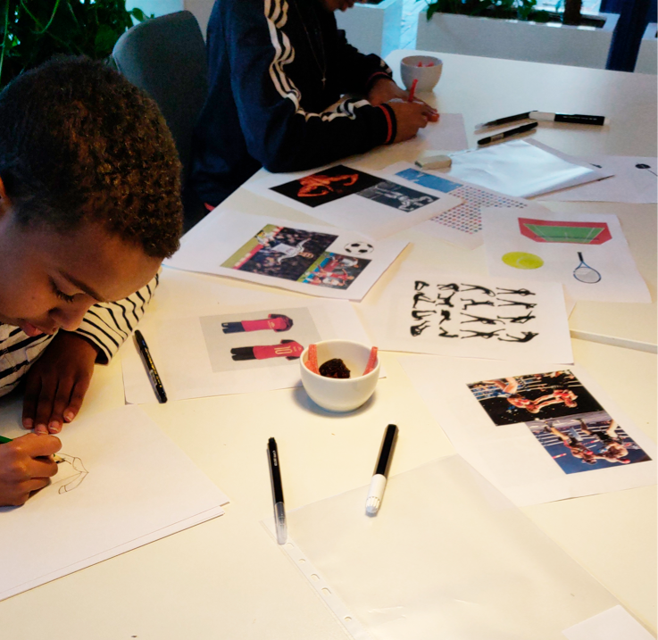
4.2.21
CC Torsdagsklub
Under anden nedlukning besøgte CC Studios kunstformidler CC’s Torsdagsklub i Lundtoftegade hvor deltagerne bor.
Klubben arbejdede på at producere tegninger til et magasin til en kommende udstilling, og de viste boligkvarteret frem. Derudover blev der drukket saftevand, spist slik og talt om hvorvidt romkugler smager godt eller ej.
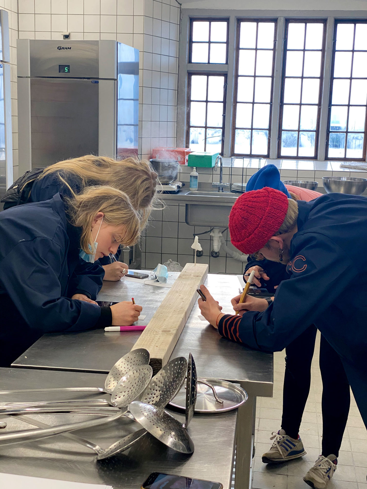
5.12.20
Kunstdemokraterne på Ungdomsøen
En solrig decemberdag tog en gruppe af Kunstdemokrater en tur ud til Ungdomsøen. Øen er det gamle Middelgrundsfort, og er nu et sted for Danmarks unge. Kunstdemokraterne var blevet inviteret til at udtænke en idé for, hvordan alle de, der besøger øen, kan ”sætte deres aftryk”. Efter en rundvisning i de lange underjordiske gange gik Kunstdemokraterne i gang med at udtænke en plan.
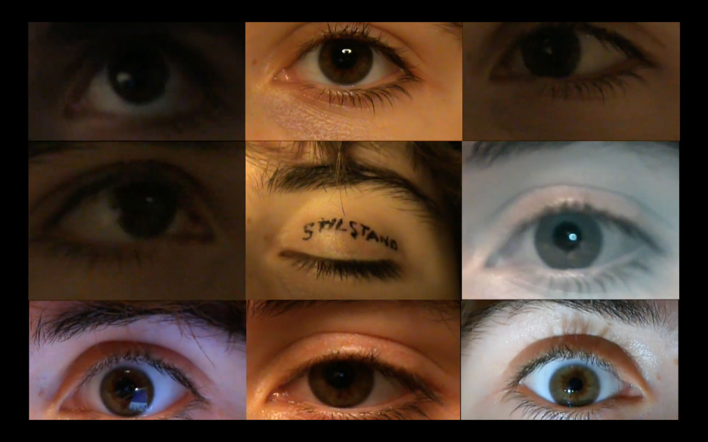
23.2.21
Det frie Gymnasium laver film
”Lav en film på to minutter med inspiration fra videoinstallationen LOOK AT ME af kunstneren Christian Falsnaes.” Sådan lød opgaven til en HF-klasse på Det frie Gymnasium i januar måned. Det blev til seks stærke lyd- og billedfortællinger, som kan ses længere nede på denne side.
CC har samarbejdet med Det frie Gymnasium om undervisningsforløb siden 2018.
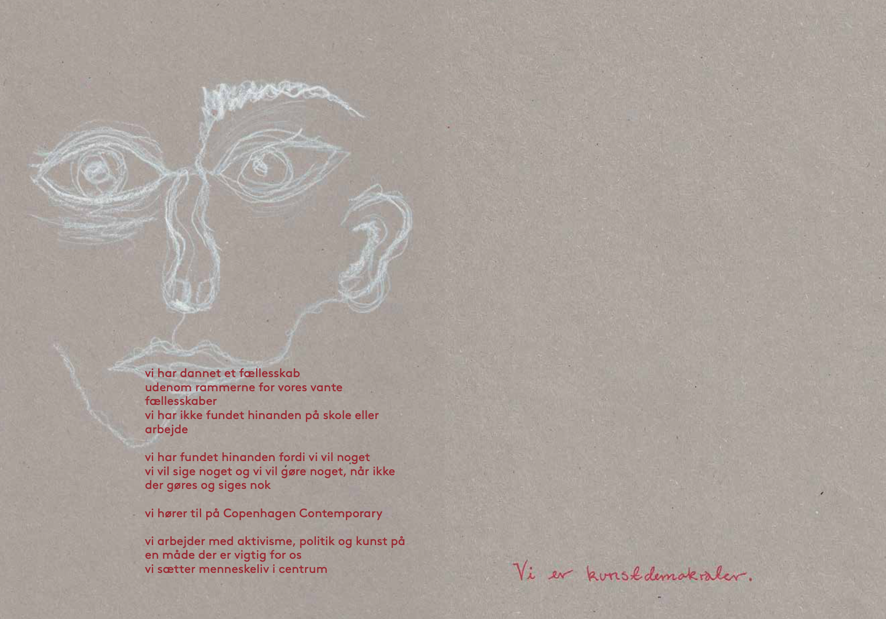
4.2.21
Online boglancering: ”FællesSkaber”
Da Folkemødet på Bornholm 2020 desværre måtte aflyses, besluttede alle partnere bag den Sociale Scene at arbejde sammen på en udgivelse om, hvad fællesskaber har betydet under corona. I bogen kan du blandt andet læse om værket Labyrinth, om hvordan Kunstdemokraterne har savnet at føle sig som en del af et fællesskab under nedlukningen, og hvordan det er gået op for dem, at fælleskab er vigtigt.
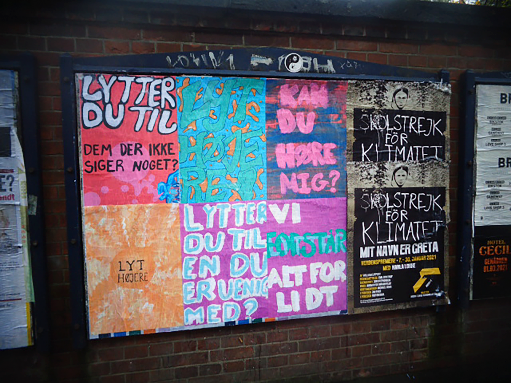
1.12.20
Plakatkampagnen ”Lyt højere”
I løbet af december kunne man se Kunstdemokraternes plakatkampagne Lyt højere rundt omkring i København. Kampagnen handlede om, at vi alle skal lytte mere, til hinanden, dem, vi er uenige med, os selv og til naturen. Kunstdemokraterne havde arbejdet på at finde et fælles budskab inspireret af udstillingen In Focus: Statements, som skulle få de, der så plakaterne til at stoppe op og forhåbentlig tænke en ekstra gang over, om vi husker at lytte.
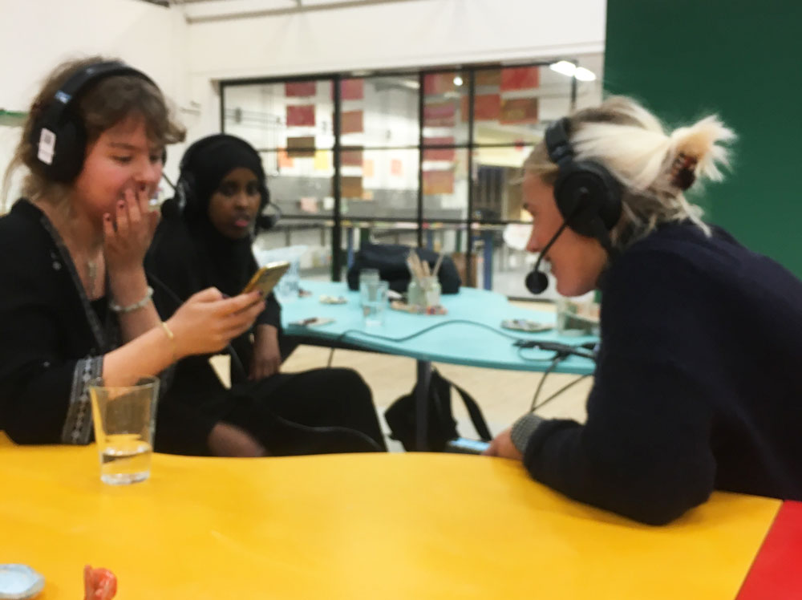
5.11.20
Kunstdemokraterne på Radio Loud
I forbindelse med Esben Weile Kjærs udstilling lavede ”Forstærket” et program om at være ung, corona og kunst. De to Kunstdemokrater Sumaya og Simone fortalte om, hvordan det er at være en del af CC, og hvad de har fået ud af at være en del af Kunstdemokraterne. Simone læste et digt op, som hun har skrevet om det at være en del af noget, der er større end én selv, nemlig et fællesskab.
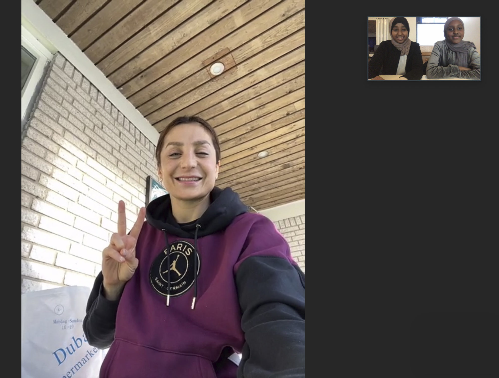
19.2.21
Interview med Nadia Nadim
Huda og Yasmin fra Torsdagsklubben fik mulighed for at snakke med deres sportsidol, fodboldspilleren, Nadia Nadim over Zoom. Pigerne spiller selv fodbold og talte med Nadia om, hvordan det nogle gange kan være svært at være de eneste piger på banen.
Hele interviewet bliver bragt i ’sportsbladet’ i forbindelse med den kommende udstilling Art of Sport
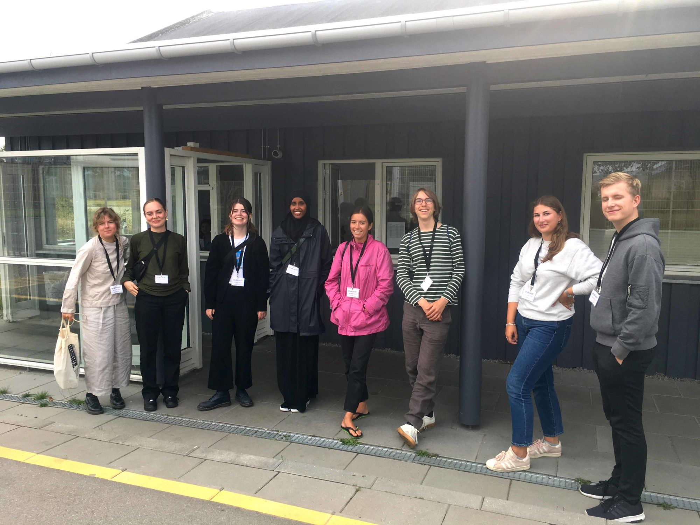
24.8.20
Kunstdemokraterne besøger Sjælsmark
En gruppe af CCs Kunstdemokrater tog til udrejsecenter Sjælsmark for at se, hvad det egentlig er for et sted. En tur rundt på Sjælmark og en god snak gav os indblik i det danske asylsystem og hvordan det fungerer. Læs mere om Kunstdemokraterne HER.
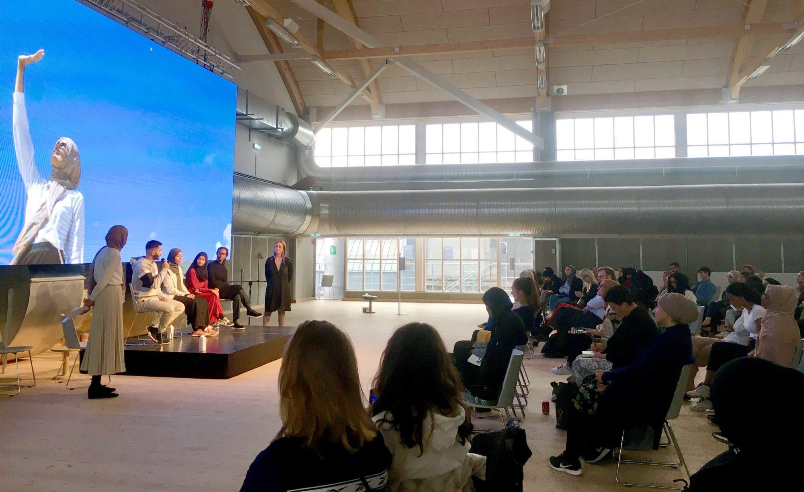
11.9.20
Film og paneldebat
Den poetiske kortfilm Ramadan Muslim skabt af digter Naiha Khiljee og videograf Anne Ahn Lund havde sin premiere på CC. Filmen er skabt over digtet Ramadan muslim fra digtsamlingen Kære søster. Efterfølgende var deltagerne fra filmen på scenen for at fortælle om, hvordan de oplevede ramadanen under COVID-19.
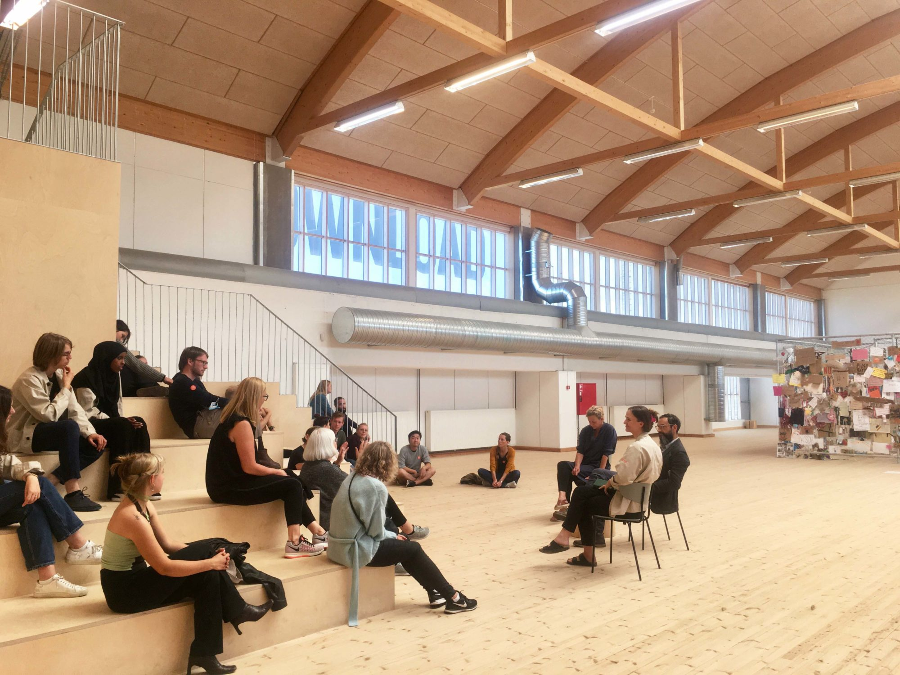
5.9.20
Art Talk med Sam Durant
Kunstneren Sam Durant besøgte CC for at fortælle om sit arbejde med værket Labyrinth, og om hvordan det oprindeligt blev til i samarbejde med fængselsindsatte i Philadelphia. Med kurator Jannie Haagemann og formidler Karen Bohøj fra CC snakkede vi om, hvordan værket har udviklet sig i på CC, hvor gæsterne har skabt egne små værket om hvordan corona påvirker vores verden.
Alle værkerne har hængt på Labyrinth‘s hegn og er nu et vidnesbyrd fra 2020.
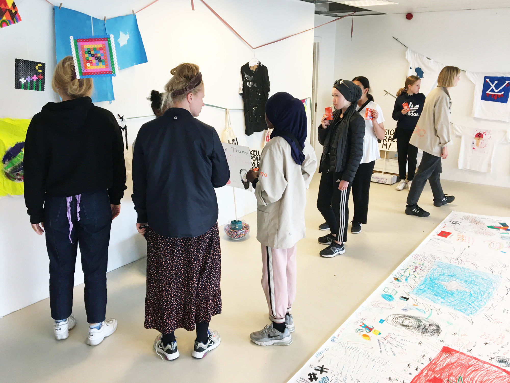
25.6.20
Sommerskole
Sommeren igennem inviterede vi børn og unge på sommerskoler her på kunstcentret. Vi arbejdede med udstillingerne, øen og naturen omkring os og skabte nye kunstværker. Hver uge blev afsluttet med en udstilling, hvor børnene selv tog imod gæster og fortalte om de nye værker.
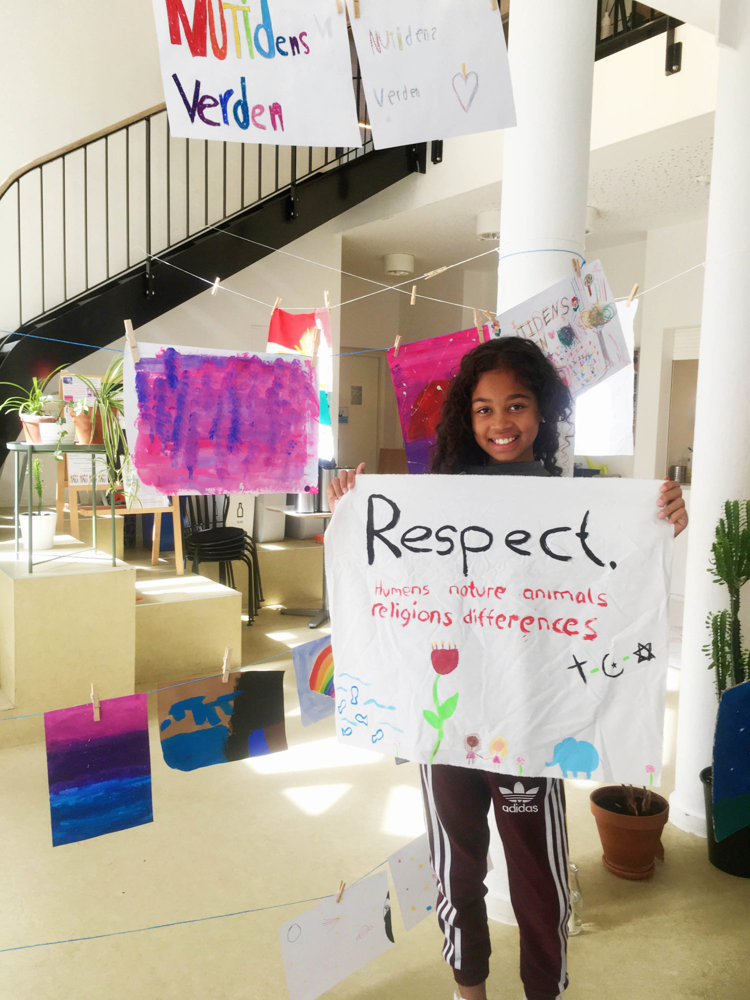
17.7.20
Sommeruge for familier
Som afslutning på ugen, hvor familier har arbejdet med og udfoldet kunsten på CC, afholdt vi fernisering i beboerhuset i Vermundsgade. Udstillingen var inspireret af værkerne fra In Focus: Statements. Flag, bannere og plakater med stærke budskaber blev til ud fra snakke om demokrati, magt, eget liv og oplevelser.
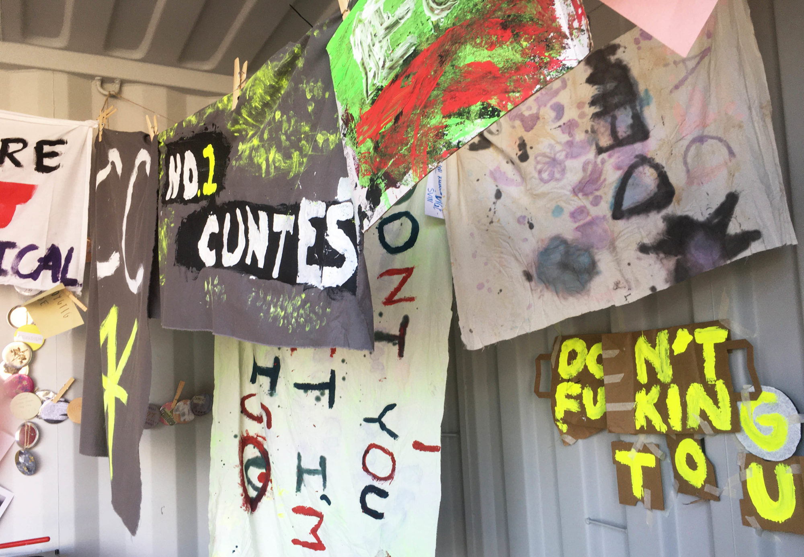
25.6.20
Statement Studio
Da udstillingen In Focus: Statements åbnede i juni, åbnede Statement Studio også. Statement Studio er et værksted hvor man kan udforme sit eget budskab. Man kan trykke, male, tegne og lave et badge så man kan bære sit budskab på tøjet. Statement Studio er en udendørs container foran CC til slut august.
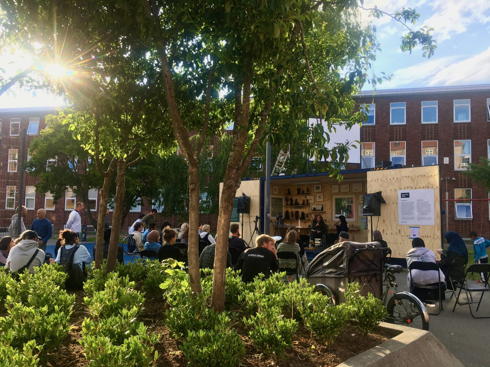
1.7.20
Åbning af Kunstcontainer
Som en del af kunstprojektet Usynlig Stier åbnede kunstcontaineren på Krakas plads med fernisering, artist talks og DJs. Containeren er et sted for kunstneriske dialog og samskabelse med de lokale beboere og lokale aktører. Usynlige Stier er et samarbejde mellem beboere, flere organisatationer og Copenhagen Contemporary.
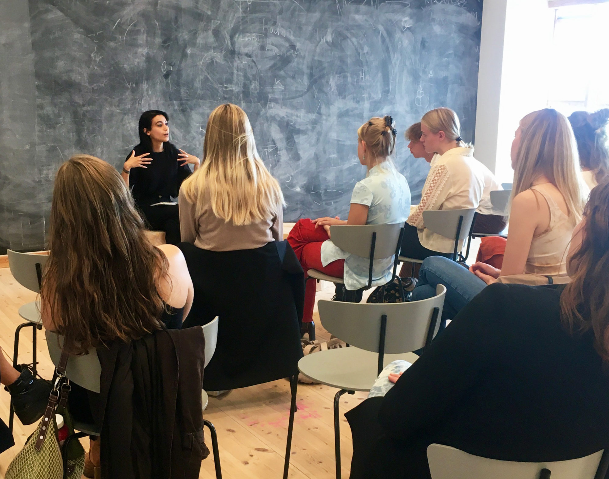
29.7.20
Kunstdemokraternes uge
Kunstdemokraterne er CCs unge fællesskab, der arbejde med kunst og demokrati. I løbet af ugen samlede vi inputs og viden fra gæster til Kunstdemokraternes arbejde om kunst, demokrati og aktivisme. Vi snakkede om indflydelse gennem ”udenomsparlamentarisk” aktivitet, at være politisk i kraft af den man er og hvordan man finder sit aktivistiske sprog.
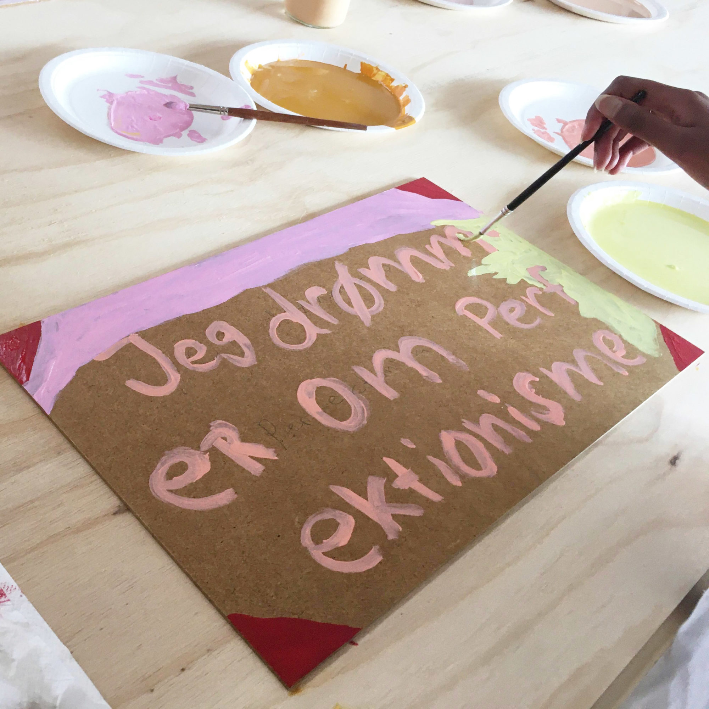
29.7.20
Drømmeværksted med Gudrun Hasle
Som en del af sin udstilling på CC sammensætter kunstneren Gudrun Hasle et kæmpe kunstværk bestående af små drømmeværker skabt af os alle. Vi inviterede til det første drømmeværksted på CC, men vi har også været på farten sammen med Gudrun Hasle og bl.a. besøgt et herbergcenter og børn på Nørrebro, som også har bidraget til værket.
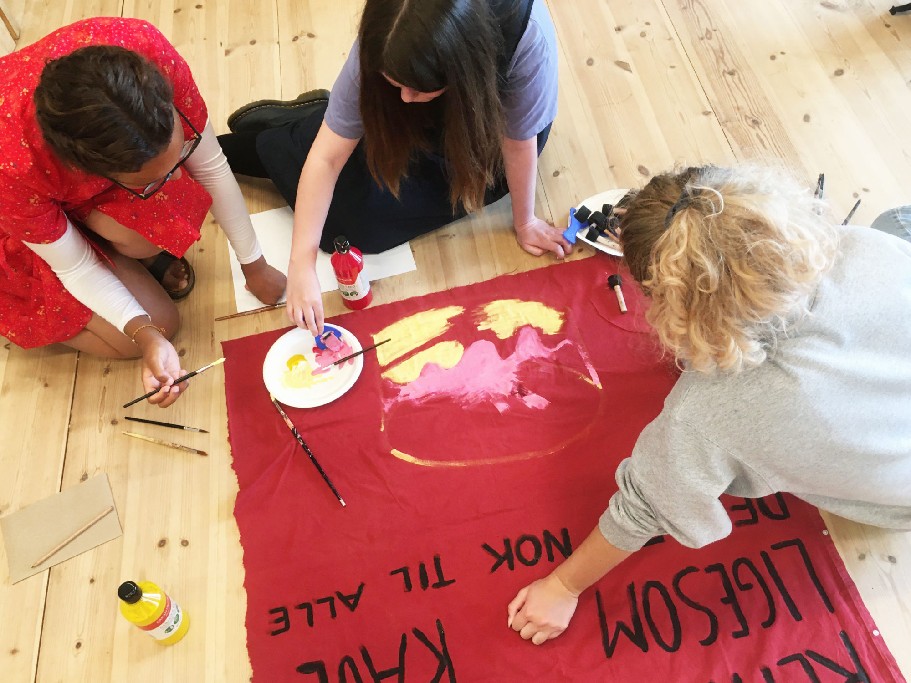
15.7.20
Bannerworkshop med Kunstdemokraterne
Som en del af Statement Studio inviterede Kunstdemokraterne til bannerworkshop. Her blev snakket om budskaber, hvad de indeholder og hvad der gør dem stærke. Alle bannerne blev hængt i Statement Studio containeren som en del af udstillingen In Focus: Statements.
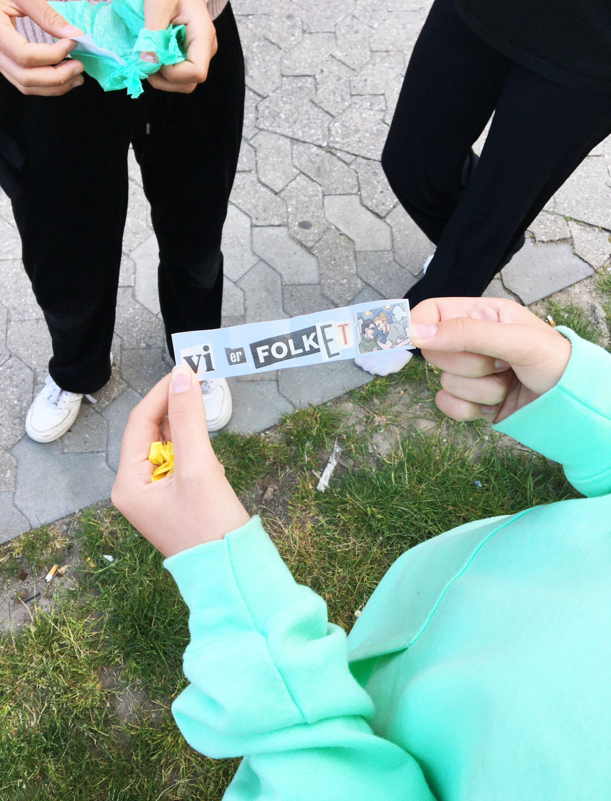
1.5.20
Undervisning under corona
Da skolerne åbnede op efter corona i alternative klasselokaler, underviste CC Studio mindre grupper af elever fra Nørre Fælled Skole i medborgerhuset i Vermundsgade. Eleverne lavede deres egne fortune cookies, inspireret af Felix Gonzales-Torrres værk, som under første bølge af corona var udstillet både på CC, rundt om i byen og i private hjem.
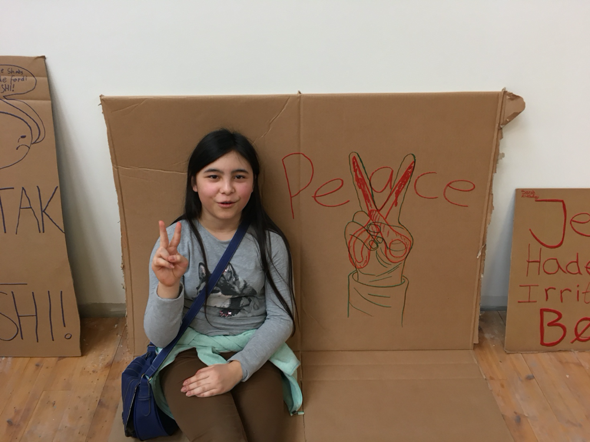
20.2.19
Udstilling om demokrati
Et hold fra Peder Lykke Skolen i København slog sig ned på CC i dagevis for at diskutere kunst, ytringsfrihed og demokrati – og byggede udstillingen Black Box med statements i ord, billeder og lyd.
Kunstcontaineren
Som en del af Usynlige Stier driver vi sammen med den boligsociale helhedsplan i Vores Kvarter/Aldersrogade en kunstcontainer på Krakas Plads. Herfra inviterer vi til kunstneriske workshops, art talks, værkstedsmøder, kunstture m.m. Containeren er også et udstillingssted, hvor to værker lige nu kan opleves hver aften ved mørkets frembrud.
Et andet afgørende element i Usynlige Stier er det underjordiske værksted i Sigynsgade. Her arbejder kunstnergrupper og beboere med forskellige samskabende kunstprojekter.
Kunstklubben
Kunstklubbens medlemmer er alle bosat i området omkring Krakas Plads. Alle – børn, unge, voksne – kan være medlemmer. Vi mødes for at opleve, diskutere og skabe kunst sammen, og klubben har også formelle opgaver, der går ud på at beslutte, hvilke kunstnere der skal udvikle værker og aktiviteter i området. Kunstklubben er et samarbejde mellem CC, helhedsplanen og beboere fra andels-, ejer- og boligforeninger, der grænser op til Krakas Plads.
Fritidsjobbere
Fra samme boligområde har vi hele sommeren haft fritidsjobbere til at hjælpe os i kunstcentret, og nu har vi ansat en af de unge fast. Nogle af de unge har også deltaget i workshops, som vi udviklede under første coronanedlukning.
Gæstebud
Gæstebud er enkelt: CC inviterer familier fra Vores Kvarter/Aldersrogade på besøgsture til kunstcentret. Vi byder på mad og drikke, og vi arbejder sammen i udstillingerne og på værkstedet med kunsten og forskellige materialer. Det første gæstebud foregik ved, at familierne inviterede CC til møde og middag i boligområdets beboerhus. I takt med at vi lærer hinanden at kende, udvikler familierne også aktiviteter under besøgene, og i løbet af projektet inviterer vi vores naboer fra de nye boligområder ved Refshaleøen på besøg.
Gæstebud er støttet af Sportgoodsfonden.